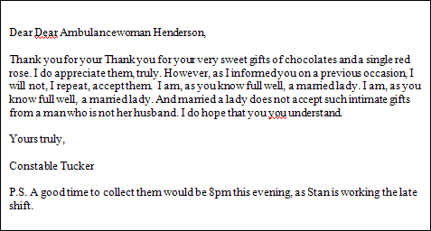
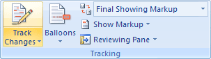
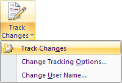
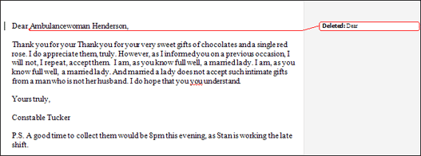
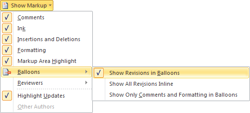
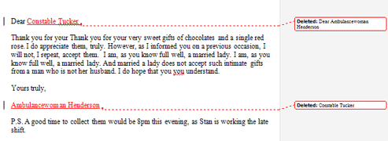
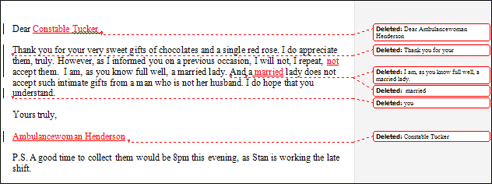
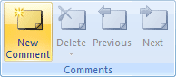
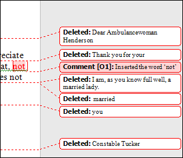

Free
computer Tutorials
|
Free
computer Tutorials
|
|
 home home |
|
|||||
Microsoft Word 2007 to 2010Section Eleven: 1 2
Document CollaborationIf you use Microsoft Word in a business environment then something called Document Collaboration can come in handy. This is where more than one user makes changes to a document. All the changes can then be reviewed and compared to the original before a final approved copy goes out. In this section, you'll see how it all works.
So open up the file called CutCopyPaste. Hopefully you haven't saved your changes over the top of it. If you have, you can download it here by right-clicking below. From the menu that appears, select either Save Target as, or Save Link As. Save this document with the name LetterChanges.docx. Your letter should look like this when you open it up in Word:  To make changes that others can see, click on the Review tab in the Word ribbon. Locate the Tracking panel, and the Track Changes item:  Click on Track Changes to see the following menu:  Click the Track Changes item from the menu. Nothing will happen until you make your first change. Delete one of the "Dear's" from the first line of the letter. You'll then see a new panel appear on the right. You'll also have an underline stretching right across the first line of the letter:  In the new panel on the right (called the Markup Area), you can see that a red rounded rectangle is surrounding the words "Deleted: Dear". This is telling what change you made. If you can't see a Markup Area then click on Show Markup from the Tracking panel. From the Show Markup menu, select Balloons then Show Revisions in Balloons:  Move the words "Ambulancewoman Henderson" down to the line after "Yours truly". Then move "Constable Tucker" up to replace "Ambulancewoman Henderson". You should see more comments and underlines appear:  Now study the document and makes changes where you feel they are needed. You should then end up with a document like this one: 
Adding Comments to a DocumentYou can add comments to the document, as well. We'll add a comment that we have inserted the word "not" into the text. So highlight the word "not" after "I repeat" (or insert the word, if you haven't already). Now locate the Comments panel, and the New Comment item:  Click on New Comment. You'll see a new panel appear in the margins. Type something for your comment, something like "Inserted the word 'not'":  If you need to, add more comments. You can add as many as you like. To delete a comment, click inside the comment in the Markup Area on the right. From the Comments panel, click the Delete option. You can also jump from comment to comment by clicking the Previous and Next items.
In the next lesson, you'll learn how to accept or reject the changes you made above. <--Back to the Word Contents Page View all our Home Study Computer Courses
|
||||||
|